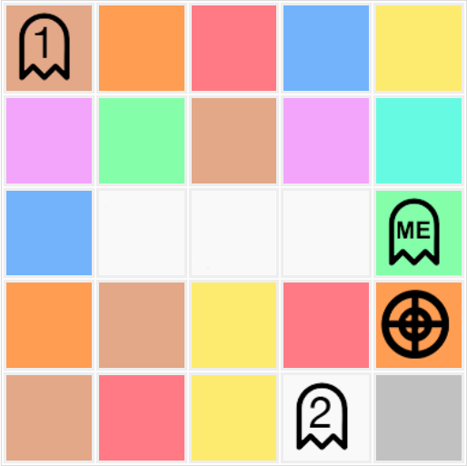
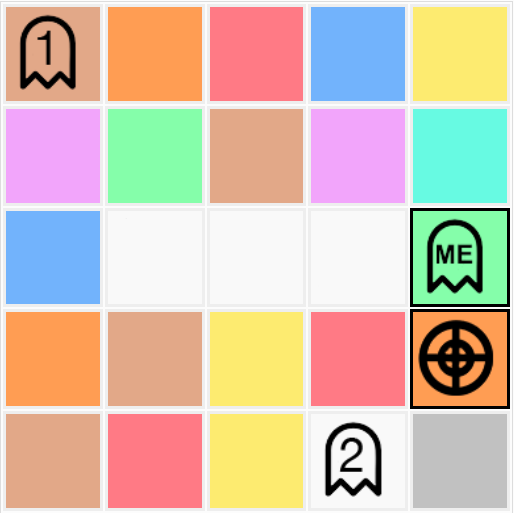
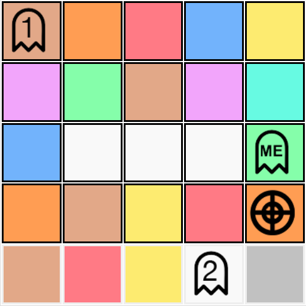
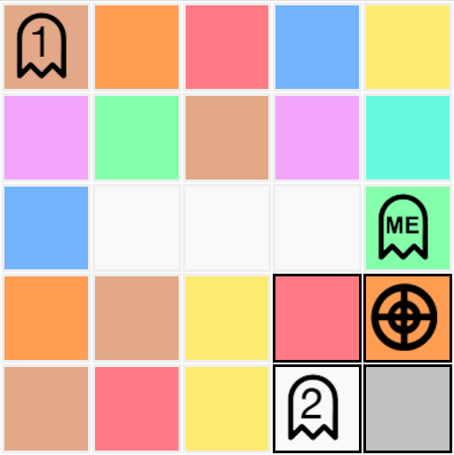

You will now read a short explanation of how the computer assistant comes up with possible exchange suggestions.
The computer assistant compares all of the shortest paths and possible exchanges, between the player and the goal. There are multiple shortest paths between the player and the goal and the computer assistant considers all of them. It then chooses the path and possible exchanges that produce the maximum scoring function while always reaching the target location.
It would take too long to calculate all of the possible paths from the players' initial position to the goal so the computer assistant only considers all of the paths with the shortest distance (there is more than one). The computer assistant also doesn't consider situations in which it might be best to do nothing. This could lead to a wrong suggestion.
If a longer path exists in which there are no requests needed, and would therefore generate a higher score, the computer assistant would not suggest it. Also if doing nothing is better than performing several exchanges to reach the goal, the computer assistant would not suggest it.
The computer assistant calculates the path score as follows:
Consider the following game scenario :
The highlighted tiles below demonstrate the tiles the computer assistant will consider when attempting to find a path from each player to the goal.
For the "ME" player the Computer Assistant will consider the following tiles :
For Player 1 the Computer Assistant will consider the following tiles :
For Player 2 the Computer Assistant will consider the following tiles :
You will now read a short explanation of how the computer assistant comes up with possible exchange suggestions.
The computer assistant compares all of the shortest paths and possible exchanges, between the player and the goal. There are multiple shortest paths between the player and the goal and the computer assistant considers all of them. It then chooses the path and possible exchanges that produce the maximum scoring function while always reaching the target location.
It would take too long to calculate all of the possible paths from the players' initial position to the goal so the computer assistant only considers all of the paths with the shortest distance (there is more than one). The computer assistant also doesn't consider situations in which it might be best to do nothing. This could lead to a wrong suggestion.
If a longer path exists in which there are no requests needed, and would therefore generate a higher score, the computer assistant would not suggest it. Also if doing nothing is better than performing several exchanges to reach the goal, the computer assistant would not suggest it.
The computer assistant calculates the path score as follows:
Consider the following game scenario :
The highlighted tiles below demonstrate the tiles the computer assistant will consider when attempting to find a path from each player to the goal.
For the "ME" player the Computer Assistant will consider the following tiles :
For Player 1 the Computer Assistant will consider the following tiles :
For Player 2 the Computer Assistant will consider the following tiles :
You will now start the second part of the experiment. You will be shown a total of 10 games.
The player gets +150 points for reaching the goal.
The player gets +5 points for each extra chip.
It costs -70 points to request a chip from each player.
It costs -6 points for each chip requested.
The total score is the sum of all of these points.
| Player | Success | Number players requested* | Requested chips | Extra chips | Score |
|---|